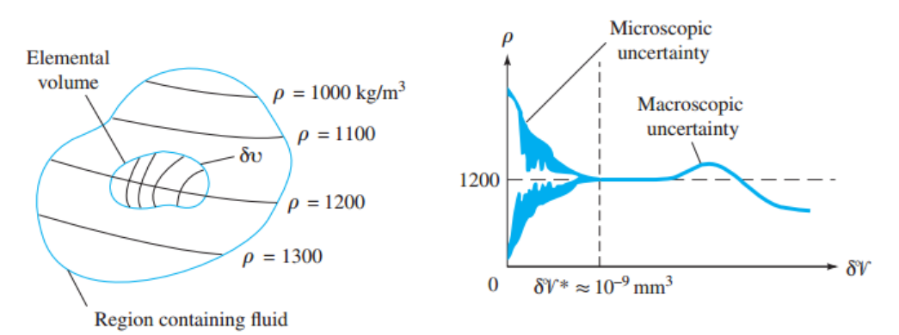
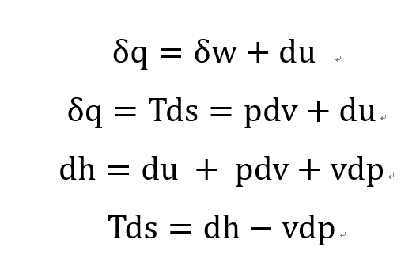
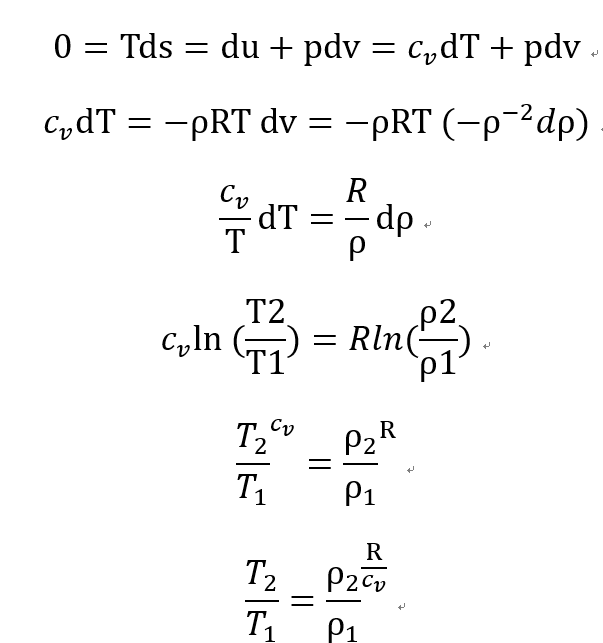
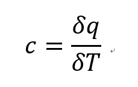
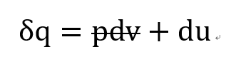
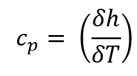
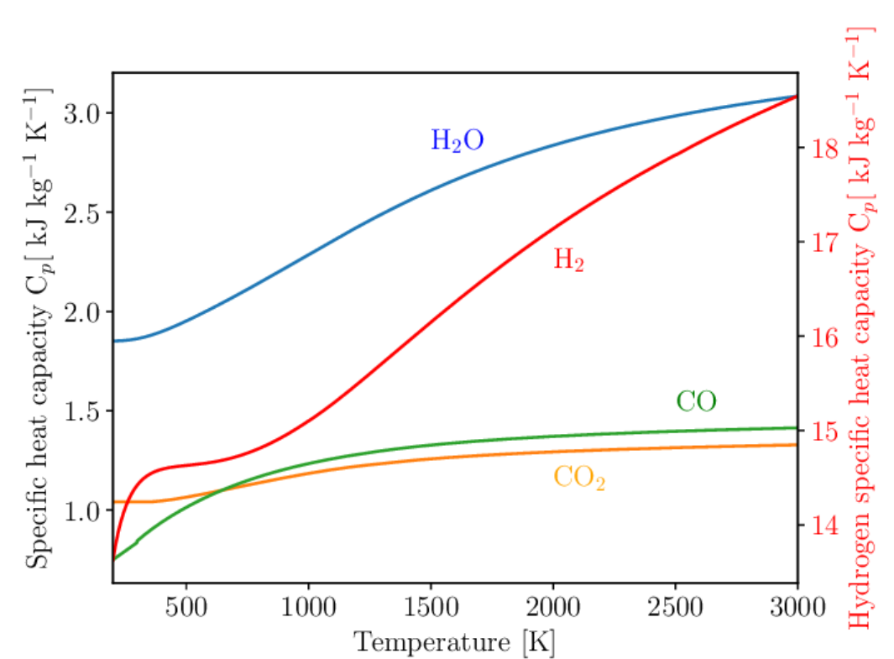

[Gas Dynamics] Ch 1 Basic properties
[Abstract]
Before going deep in Gas dynamics,
knowledges of fluid mechanics and thermodynamics are fundamentally required.
Therefore, the Chapter 1 deals with the basic prerequisits for Gas dynamics
1. Density ( ρ ) [u nit : kg/ ㎥ ]
Fluid molecules 들은 끊임없이 움직이기 때문에 Fixed volume 로 해석 될 수 없다.
(Brownian motion)
하지만 특정 부피( dV ) 에서는 Bulk Aggregation of the particles 들로 해석할 수 있다.
![[Gas Dynamics] Ch 1 Basic properties](./images/img-001.png)
+ 입자들 사이의 거리 >>> 입자의 지름
즉 입자들이 한정된 부피에서 움직인다고 봐도 무방하다는 것이다. 따라서 밀도를 정의할 수 있게 된다.
![[Gas Dynamics] Ch 1 Basic properties](./images/img-002.png)
이보다 큰 부피에서는 Desity 는 Point function 이고 모든 Fluid property 들은 Continum 한다.
아래 왼쪽 그림처럼 Elemental volume 이상일때 밀도는 Coninum 하게 변화하는 것을 알 수 있다.

오른쪽 그래프에서는
dV
기준으로 왼쪽은 Microscopic, 오른쪽은 Macroscopic 해석을 보여준다.
즉 Bulk aggregation of particles 들로 볼 수 있나 없나가 기준인 것이다.
Specific volume :
1/
ρ
Specific weight :
ρg
2. Pressure ( P ) [u nit : N/ ㎥ ]
Absolute pressure: measrued with respect to a perfect vaccum
Gage pressure: measured with respect to the surrounding pressure(1atm)
3. Temperature ( T ) [u nit : K, ℃]
결국 온도는 상대적인 개념이다. 즉, 기준점보다 얼마나 뜨거운지 차가운지를 나타내는 척도.
따라서 먼저 기준점을 설정해야한다.
1. Celsius (℃): 물의 어는점 (0
℃
), 끓는점 (100
℃
)
2. Kelvin (K): 물의 삼중점(0.01
℃
) = 273.16K, 1K = 1
℃
4. Viscosity
[The definition of 'Fluid']
A common fluid is any substance that will continously deform when subjected to a shear stress.
고체의 경우 Deform이 얼마나 되었는지를 명확하게 수식화 할 수 있지만
(Elastic 영역 일때)
Shear stress = Shear modulus * shear starin
유체의 경우는 Viscosity 를 정의하여 수식화 해야한다.
Shear stress = Rate of angular deformation * Viscosty
![[Gas Dynamics] Ch 1 Basic properties](./images/img-004.png)
Viscosity 에 대한 자세한 내용은 유체역학 리뷰에서 더 자세하게 다루겠습니다.
5. Equation of state
Liquid: incompressible, constant density
Gas: following perfect gas equation of state
-> neglects molecular volume and intermolecular forces of the gas
(High temperature with low pressure -> Ideal gas)
5.1. Thermodynamics equation of state
Type of Properties
Observable: P,T,v(velocity),m
Mathematical: density, specific heats, enthalpy
Derived: Internal energy(First law of thermodynamics), Entropy(2nd Law of thermodynamics)
-> Unit mass + single phase인 경우 위의 property 중 두가지만 알면 state를 fix 할 수 있다
(equation of state in thermodyanmics)
6. First law of Thermodynamics
어떠한 system 에 들어간 q(heat/unit mass)변화량 은 system 이 외부에 한 일(w)의 변화량 과
시스템의 Total energy 변화량과 같다.
![[Gas Dynamics] Ch 1 Basic properties](./images/img-005.png)
Total energy = u(내부에너지) + 시스템 내부 운동에너지 + 시스템 포텐셜 에너지, 와 같지만 Stationary system이라는 가정하에 위의 식이 나온다.
여기서 Enthalpy h = u + pv 라고 정의한다. (새로운 property 정의)
정의한 이유는 여기서 일정압력의 process일 경우 dq = dh 이기 때문, 거의 대부분 process는 일정압력에서 일어나기 때문이다.
dh = du + pdv + vdp
일정압력인경우 (dp = 0) + stationary stsyem일때 system 이 외부에 한 reversible work(dw = pdv) 이므로
dh = du + dw
dh = dq 임을 알 수 있다.
7. 2nd law of Thermodynamics
어떠한 process로 state1 -> state2 일때, Surrounding에 영향을 주지않고
다시 state2 -> state1으로 돌아 갈 수 있는 있는가? 의 질문으로
Reversible, Irrversible 이라는 개념이 나오게 된다.
열역학 시간에 다시 다루겠지만 이러한 개념으로
Reversible 과정일때는
![[Gas Dynamics] Ch 1 Basic properties](./images/img-006.png)
가 path independent 하다 라는 것을 발견하였고 결국 Point function △S로 정의한다.
![[Gas Dynamics] Ch 1 Basic properties](./images/img-007.png)
따라서 열역학 1법칙 에너지보존 식과 연립하면 Reversible process에서

Tds = pdv + du
Tds = dh - vdp
One of the most important and frequently used equations in Gas dynamics
Isentropic process equation in Ideal gas assumption
위식을 이용해서 (Isentropic process, ds=0 일때 이상기체 에너지 식을 유도해보자)
![[Gas Dynamics] Ch 1 Basic properties](./images/img-009.png)

좌측식과 우측 식의 온도항을 연립해주면
![[Gas Dynamics] Ch 1 Basic properties](./images/img-011.png)
은근히 많이 나오는 식이다.
8. Perfect Gas
Perfect Gas 특징은 다음과 같습니다.
1. Neglect of molecular interaction
2. Internal energy = molecule internal E + molecule Potential E + molecule kinetic E = u(T)
3. Enthalpy = u + pv = u(T) + nRT = h(T)
즉 내부에너지와 엔탈피 모두 온도 only dependent 한 함수이라는 것
9. Specific heat(c)
Definition: 어떤 물질을 1도 1kg 올리는데 필요한 열량

(q : heat per unit mass)
여기서 constant volume, pressure 인 경우 두가지로 나누어서 생각한다.
1. constant volume인 경우

![[Gas Dynamics] Ch 1 Basic properties](./images/img-014.png)
2. constant pressure 인 경우
![[Gas Dynamics] Ch 1 Basic properties](./images/img-015.png)

Liquid 의 경우
dh = du +d(pv) = du + pdv + pdv
핵심은 liquid 의 경우 incompressible 하므로 dv = 0 뿐문아니라 밀도가 높기때문에 v = 0 이라고 봐도 무방하다
따라서 dh= du
결국 c = cp=cv
Perfect 의 경우
perfect gas 인경우 u=u(T), h=h(T) 라고 했으므로 partial deriative 가 Total derivative 로 바뀐다.
du = cv dT
dh = cp dT
즉 specific 모두 온도에 관한 함수로 표현 할 수 있다.
![[Gas Dynamics] Ch 1 Basic properties](./images/img-017.png)
k = cp/cv (ratio of specific heat)
R = cp-cv (gas constant)

보통 시간에 따라서 Cp,Cv는 증가한다.
그 이유는 molecular vibartion 이 분자구조가 복잡할수록 더 mode가 많아진다. 따라서 열용량이 커지는 것.
General gass 의 경우
일반 기체의 경우 Tempearture 가 크고 pressure이 0 에 가까울경우 Ideal gas 성질을 띈다.
따라서
Cv = Cv0: zero-volume specific heat
Cp = Cp0: Zero-pressure specific heat
이렇게 두가지로 나누어 정의한다.
즉 이상기체와 성질이 비슷하다고 가정하고 Cv0 = Cv0(T), Cp0 = Cp0(T) 라고 생각함.
-> 실험데이터를 이용하여 Cp0(T) = f(T) 함수로 표현해서 각 기체별로 상수를 테이블 화해놈.